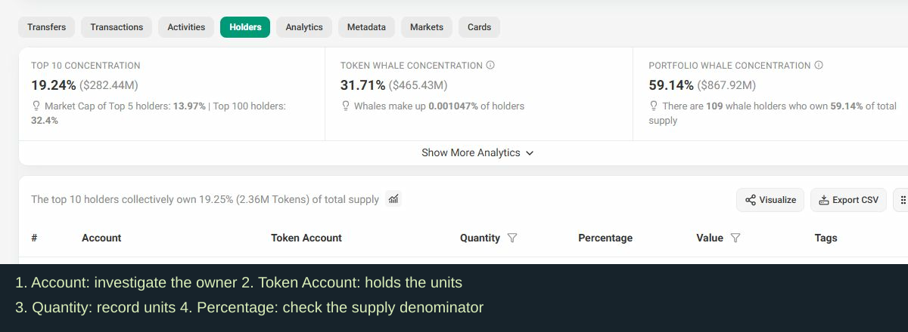

Bundles: what you are buying into
Could these wallets be holding tokens for the same group?
Before you start
The dev creates or launches the token. Depending on the platform, the dev may receive an allocation, buy tokens, earn fees, or control settings. Buyers need to check those details before relying on the holder list.
The token address identifies the asset. The creator wallet identifies an account involved in launching it. A pool holds assets used for trading. Other wallets may belong to the team, customers, bots, or unrelated holders. Write down each address's role as you investigate.
This course shows you how to record who holds tokens, who can change the rules, how much can be sold, and who gets paid. You will also check whether buyers keep coming. Section 3 explains how the dev's work, earnings, and sales affect buyers over time.
What is a bundle?
A transaction bundle groups transactions for ordered execution through a submission service. A scanner may use “bundled” for launch purchases it detects as coordinated. A bubble map draws connections from the transfers it covers. Read the tool's definition before using its percentage.
“20% bundled” might describe tokens bought at launch or tokens still held by those buyers. Check which one it means. Purchases in the same block give you addresses to investigate; funding and transfer records help you connect the owners.
How does it come about?
A dev or another group can fund several wallets and buy around launch. The combined holdings may be large while each wallet looks small. Unrelated bots and buyers can also arrive together. Check the launch rules to see whether the dev received an allocation or bought tokens, then follow the wallet connections.
Why is it risky?
A group can sell more than new buyers are taking in. It may also supply much of the early buying. Check remaining tokens, actual sales, and whether buying continues after that group stops.
How to investigate it
- Copy the token address and chain into a supported bubble-map tool. Record the snapshot time and coverage.
- Select large bubbles and connected groups. Identify pool, burn, exchange, and system accounts before adding holder balances.
- Open the top ten ordinary holders in the explorer. Find owner addresses, first funding, purchases, and current balances.
- Save the transaction link for each connection. A shared exchange withdrawal needs more checking because exchanges serve many customers.
- Add reliably linked balances once. List possible additional wallets separately. Refresh after trades and transfers.
What the bubble map cannot show
Coordinated wallets may never transfer tokens to each other. Custody services and missing history can hide ownership. Record these gaps beside your group total.
Set up a concentration screen
This course uses 3% as an example personal limit for immediately available tokens held by one owner or linked group. Choose and record your own limit. Passing this screen still leaves permissions, liquidity, and demand to investigate.
Write the calculation: linked available units ÷ available holder supply × 100. Here, available holder supply means units ordinary holders can transfer now, excluding identified pool reserves, burned units, and locked units. If you cannot establish that number, record known units and the provider's percentage with its stated denominator. Leave your float-based screen unresolved.

In Holders, use Account to investigate the owner and Token Account for the units held. Save Quantity and the Percentage definition. Custody and pool rows need their own roles.
Captured 5 October 2026 on the public Wrapped SOL page. This is a navigation example. Wrapped SOL has special token mechanics; its numbers and authority labels are not the SAMPLE case or a standard meme-token assessment. Open your own token address to do the checks.
Practical case — illustrative
We will follow a made-up token called SAMPLE throughout the course. Wallet labels A and B are teaching labels, not real addresses. Later sections reveal more information. Date every finding.
At 09:00 UTC on Day 1, five wallets hold 2m units each. The example has 100m available holder units. Records connect those wallets, giving 10m ÷ 100m = 10%. This exceeds our example 3% limit even though each wallet is below it. Creator ownership is still being investigated.
Keep this record
Start a wallet list: owner address, units, percentage denominator, funding source, transaction links, link confidence, and check time. Section 5 adds the creator wallet.
Add these findings to your review worksheet →
Check your understanding — answered
Each wallet is below 3%. Can I pass the screen? Add any reliably linked wallets before deciding.
They bought in the same block. What should I record? Save the timing and investigate funding and transfers. Ownership remains uncertain until stronger evidence turns up.
The map has no connections. What next? Check holder funding and map coverage before treating the holders as independent.
Primary address, side wallets & blind spots
What does “dev holding 2%” actually cover?
What is the dev wallet?
A tool usually identifies a creator or deployer address from the launch record. Open that record to confirm the label. The dev may use other wallets. On Solana, a holder row can show a token account; find its owner address before comparing wallets. One owner can have several token accounts.
How can a low balance mislead?
A creator can move tokens to another wallet and leave a small balance in the original address. Open outgoing transactions to see whether tokens were transferred, swapped, allocated, or used in another action. For a sale, record the token quantity and asset received.
Fresh wallets and similar balances are useful leads. Save the evidence before adding a wallet to the creator group. Keep uncertain links in a separate list.
How to investigate it
- Open the launch or creation transaction. Record creator/deployer and program.
- Open relevant Holders rows and find the owner of each token account. Avoid counting one owner twice.
- Open the owner's Transfers and Transactions. Follow outgoing transfers and current recipient balances.
- Open transaction signatures. Save amounts, direction, received assets, and evidence connecting the recipient.
- Add confirmed group balances once. List exchanges, routers, pools, and uncertain wallets separately with their roles.
In Holders, use Account to investigate the owner and Token Account for the units held. Save Quantity and the Percentage definition. Custody and pool rows need their own roles.
Captured 5 October 2026 on the public Wrapped SOL page. This is a navigation example. Wrapped SOL has special token mechanics; its numbers and authority labels are not the SAMPLE case or a standard meme-token assessment. Open your own token address to do the checks.
Practical case — illustrative
At 09:10 UTC, SAMPLE's creator wallet A holds 2m units. Earlier transactions show A sent allocations to the five wallets from Section 5, which hold 10m combined. The current creator-group total is 12m, or 12% of the example's 100m available holder supply.
One wallet moves 2m to B. In this example, the records establish that B is still controlled by the group. Update the address list; the total stays 12m. If B's owner were unclear, save the transfer and unresolved recipient rather than assuming a sale.
What you may still miss
Exchange custody, private agreements, and wallets without traceable connections can leave holdings unknown. Include the addresses and time covered by your check so readers understand what your total includes.
Keep this record
Update the wallet map with A and B. Save each link's transaction, attribution reason, balance, and check time. Later sections record control rights and fee recipients separately.
Add these findings to your review worksheet →
Check your understanding — answered
The creator balance fell. How do I find out why? Follow outgoing transactions. Look for completed swaps and received assets before recording sales.
Two wallets used the same exchange. Can I combine them? Leave the ownership link uncertain unless you find additional evidence.
A wallet received tokens without paying in that transaction. What was its cost? Check earlier history and allocation terms. The visible transfer does not tell you its purchase cost.
Mechanism references
SAMPLE is made up for this course. Date each finding. For a real token, use current transaction records and platform rules. Inspect shows sampled trades; use external records to check ownership and permissions.